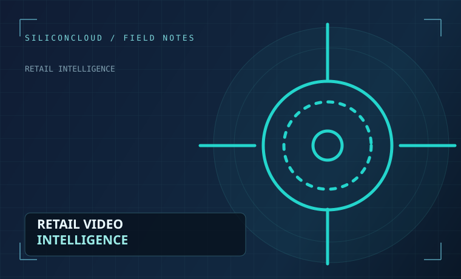
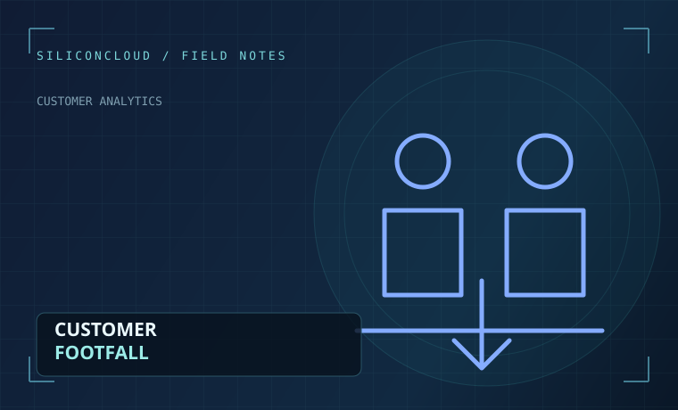
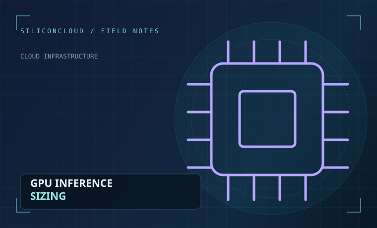

The visibility gap
Sales reports cannot show every visitor, queue or movement pattern inside a store.
SiliconCloud transforms compatible retail CCTV feeds into useful signals about customer footfall, queues and store activity using cloud-powered computer vision.
VISITORS / SAMPLE
1,284↗ illustrative dataCAMERA STREAMS
08 / 10sample statusREVIEW EVENTS
04demo activityConvert camera observations into useful operational signals.
Study entry patterns and selected area activity.
Flag defined conditions for authorised staff.
Plan processing, reporting and monitoring centrally.
Traditional monitoring is useful for recording events, but managers often still rely on manual observation to understand what happens inside the store.
Sales reports cannot show every visitor, queue or movement pattern inside a store.
Watching many camera feeds takes time. Important events can be difficult to notice.
Comparing activity between locations is difficult without shared reporting definitions.
Focus on the retail events and patterns that matter to your operations.
Turn entrance camera observations into hourly visitor trends and store-by-store comparisons.
Explore capabilityMonitor configured checkout zones and flag queue conditions that need staff attention.
Explore capabilityIdentify predefined activities such as after-hours movement for authorised human review.
Explore capabilityMeasure activity in selected store areas and compare movement across time periods.
Explore capabilityApply configurable rules to important events and organise notifications in one interface.
Explore capabilityBring analytics, selected reports and camera status into a shared management view.
Explore capabilityOur proposed architecture connects compatible cameras with cloud processing and machine learning. Configured rules turn selected model outputs into counts, event records and dashboard insights.
Give store managers, operations teams and technical stakeholders a clearer view of selected activities.
Understand when customers arrive, compare peak periods and support informed staff planning.
Explore retail solutionsIdentify queue build-ups and support quicker operational decisions during busy hours.
Explore retail solutionsFlag restricted-area activity and other configured events for responsible human review.
Explore retail solutionsCompare movement across entrances, displays and other selected store areas.
Explore retail solutionsTechnical visibility helps teams plan infrastructure, evaluate models and manage operating costs.
Monitor frames analysed per second for each stream and the complete pipeline.
Evaluate task-specific precision, recall and counting error with labelled footage.
Measure time from a selected event to its notification, including high-percentile delays.
Understand event clips, retained video, analytics records and backup consumption.
Metrics shown here are proposed capabilities, not production performance claims.
Practical guides to use cases, cloud GPU sizing and responsible deployment.

How computer vision turns camera footage into useful footfall, queue and event information.
Read article
Camera placement, line-crossing logic and validation techniques for useful visitor counts.
Read article
Calculate inference demand, test pipelines and avoid misleading cameras-per-GPU assumptions.
Read articleClear answers before you plan your video analytics project.
Compatibility depends on the camera model, supported stream format, video quality and network access. We recommend a camera assessment before planning an integration.
The proposed core use cases focus on customer counts, movement patterns and defined events. They do not require identifying individual shoppers or using facial recognition.
The proposed architecture includes centralised multi-store reporting. Implementation scope and capacity should be validated for your locations.
A discussion of your retail use case, camera environment, required analytics and the proposed monitoring workflow. Demonstration visuals may include labelled sample data.
No general figures are claimed. Detection performance, processing FPS and alert latency depend on the deployed models, footage and infrastructure. These must be tested for each use case.